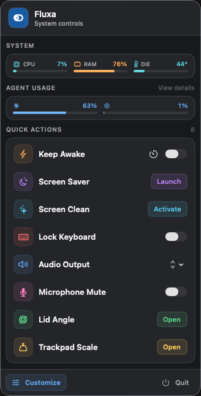
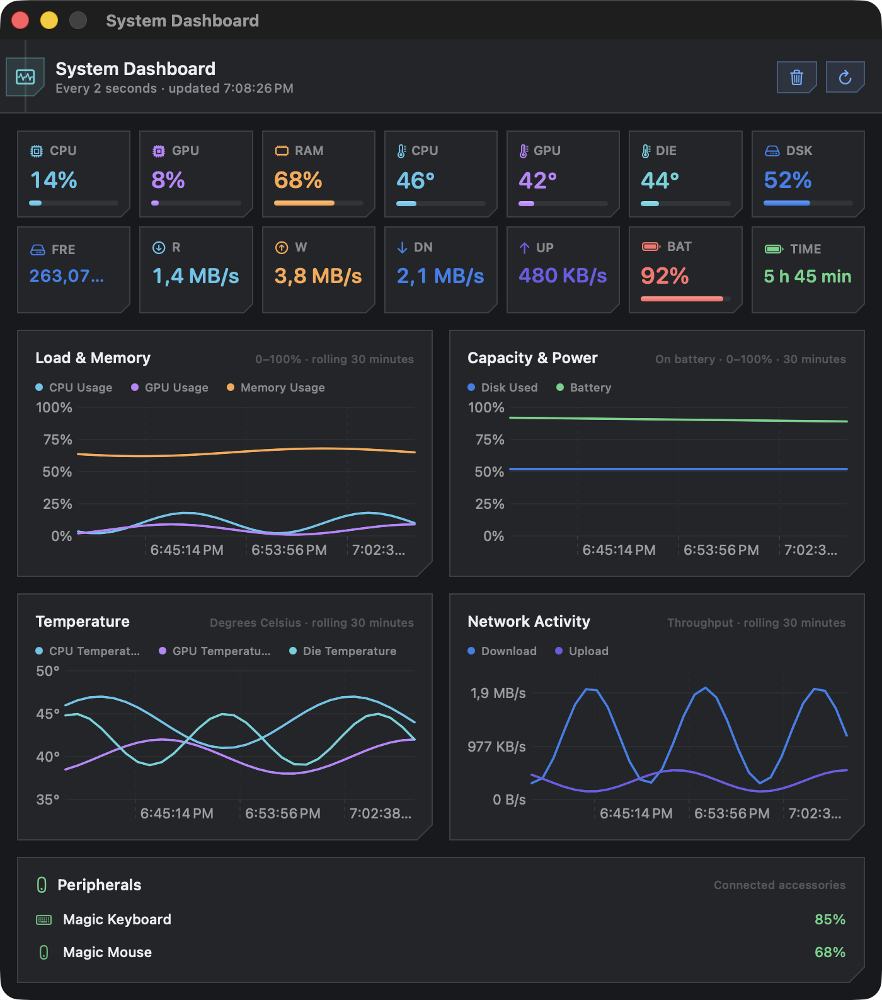
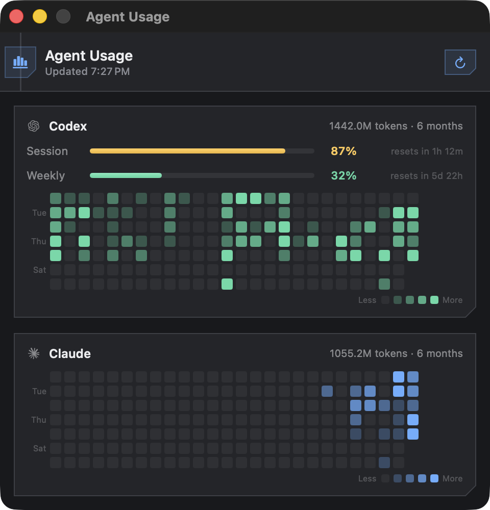
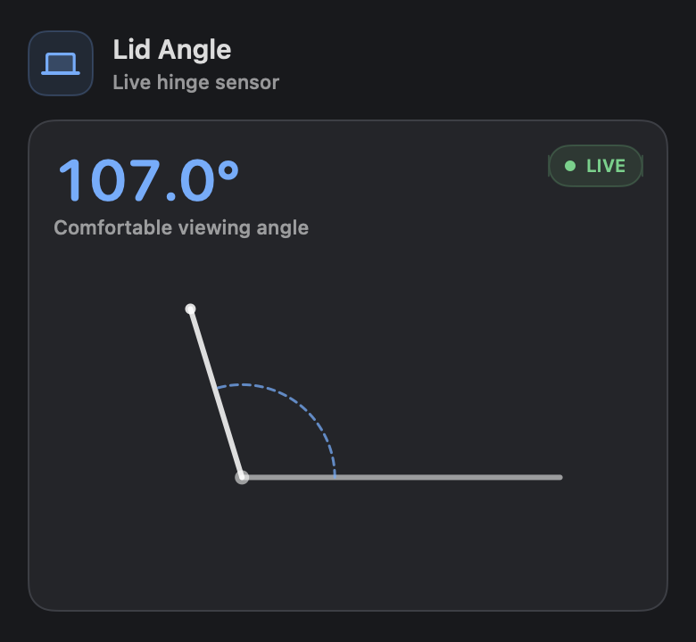
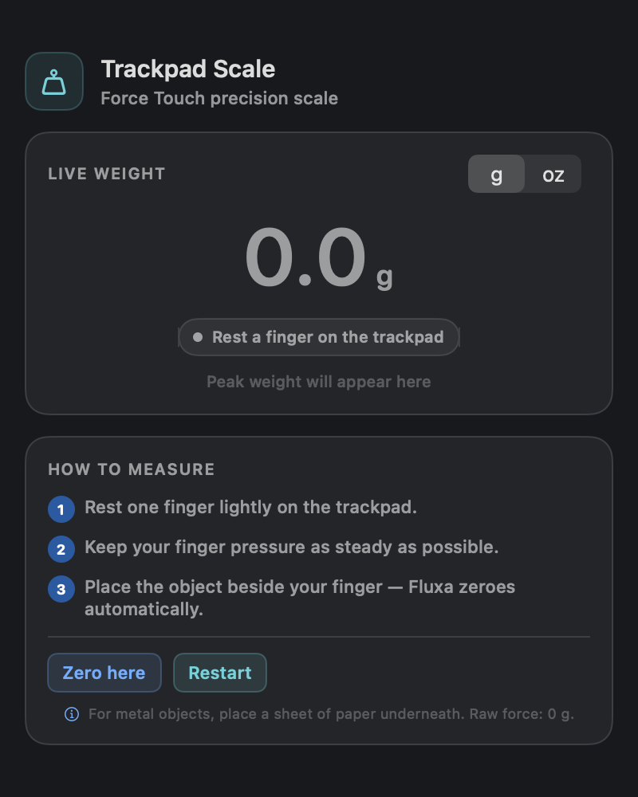
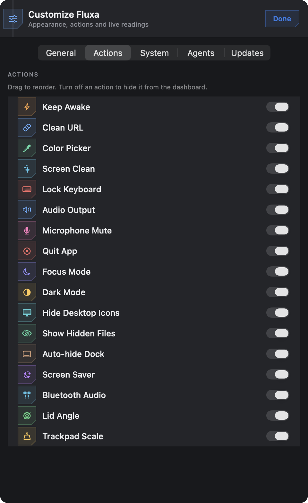
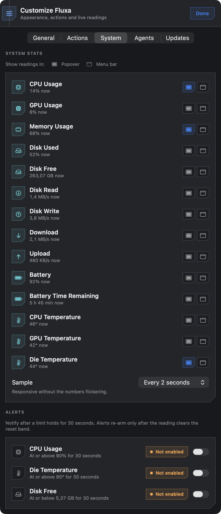
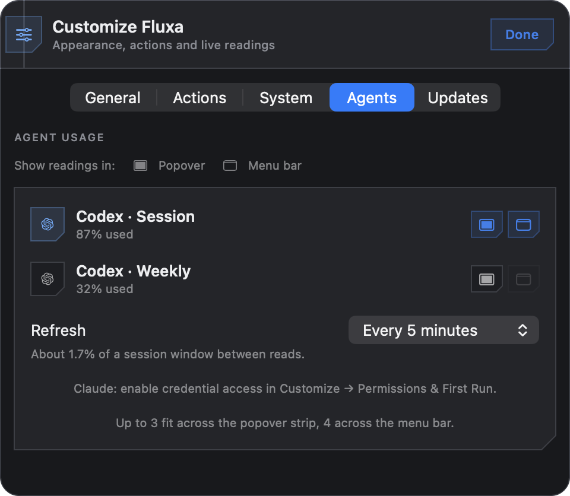
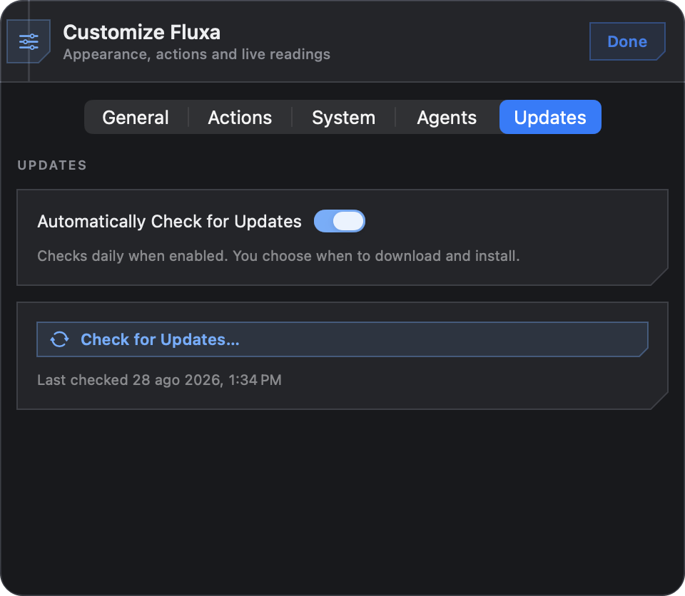

Fifteen real controls
Keep Awake, Dark Mode, Screen Clean, Lock Keyboard, Audio Output, Microphone Mute — every action calls a real system API. Keep Awake registers an IOKit power assertion; it doesn't fake a state and hope the display stays on.
// Services/KeepAwakeService.swift
let result = IOPMAssertionCreateWithName(
kIOPMAssertionTypeNoDisplaySleep as CFString,
IOPMAssertionLevel(kIOPMAssertionLevelOn),
"Fluxa Keep Awake — user requested" as CFString,
&assertionID
)
guard result == kIOReturnSuccess else { assertionID = 0; throw … }Hardware you can watch
CPU, GPU, memory and temperature pin to the popover, the menu bar, or both. Click the strip and the readings expand into a 30-minute dashboard with separate percentage and degree axes, so neither unit is visually compressed. A failed sensor pass leaves a gap — it never repeats an old value as if it had been measured again.
// Services/SystemStatsService.swift — rolling window, in memory only
static let historyDuration: TimeInterval = 30 * 60
history.append(SystemStatsHistorySample(timestamp: timestamp, values: measuredValues))
let cutoff = timestamp.addingTimeInterval(-Self.historyDuration)
if let firstRetained = history.firstIndex(where: { $0.timestamp >= cutoff }),
firstRetained > 0 {
history.removeFirst(firstRetained)
}Your agent quota, in the menu bar
Session and weekly meters with reset countdowns, plus six months of daily token history as a contribution grid per agent. The quotas come from the same endpoints each CLI calls; the history is rebuilt from the agents' own session logs, which is why the grid is already populated the first time you open it. Fluxa never refreshes those tokens — both providers rotate the refresh token on use, so renewing one here would break the very login being read.
// Services/AgentUsageReaders.swift
// Deliberately not refreshed here — using the agent once renews it.
guard !credentials.isExpired else {
throw AgentUsageReadError.tokenExpired(agent: Self.agentName,
hint: Self.loginHint)
}
let (json, _) = try await AgentHTTP.getJSON(url: Self.usageURL, …)The hinge, at 60 fps
On Apple Silicon the lid angle is a HID sensor whose feature report returns whole degrees; on Intel it's an IORegistry property in raw units. Fluxa tries both and animates a goniometer from whichever answers. On a desktop Mac the feature simply reports itself unavailable.
// Services/LidAngleMonitor.swift
/// 1. Apple Silicon: HID device (usage page 0x20 Sensor, usage 0x8A).
/// Feature report 1 returns [reportID, lo, hi] — lo|hi<<8 = degrees.
/// 2. Intel: the `LidAngle` IORegistry property (~16384 = 180°).
init() {
if openHIDSensor() { isAvailable = true }
else { … }
}A scale hiding in your trackpad
Force Touch strain gauges already report pressure in grams — but only under a capacitive touch, and
NSEvent.pressure only fires during a click. Fluxa
dlopens the private MultitouchSupport framework,
validates the frame layout at runtime, and hides the feature entirely if that layout ever changes.
// Services/TrackpadWeightService.swift
// off 8 double timestamp | off 52 float pressure (GRAMS)
let pressure = record.loadUnaligned(fromByteOffset: offsetPressure,
as: Float.self)
guard total.isFinite, pressure.isFinite,
(0...20_000).contains(pressure) else { continue }Customize · 5 tabs
Settings that stopped being one list
Preferences are grouped into General,
Actions, System,
Agents and Updates — and all of it
still transitions in place inside the MenuBarExtra
instead of opening a settings window, so the popover never loses focus. General holds the three visual
styles, subtitles, Launch at Login and the door into Permissions & First Run.
Actions — order and visibility
Every action gets a tinted icon tile and a switch in its own colour. Drag to reorder, turn one off to
hide it from the dashboard; the layout survives relaunches through UserDefaults.
// Models/AppSettings.swift — one @Observable source of truth
@Observable
final class AppSettings {
var actionOrder: [ActionID] = ActionCatalog.defaultOrder
var hiddenActions: Set<ActionID> = []
var controlStyle: ControlStyle = .classic
}System — pick the readings and where they go
CPU, GPU, memory and die temperature each carry their current value right in the row, with two separate toggles: one for the popover, one for the menu bar. Sampling runs at 1, 2, 5 or 10 seconds — and the dashboard reuses that same loop rather than doubling the sensor work.
Agents — quota windows and refresh rate
Each detected quota window is listed with its live percentage. The refresh choices aren't round numbers: a 5-hour session window spends 100 points over 300 minutes, so one percentage point takes three minutes. Polling faster can't return a different integer — it only spends requests. The tab spells out the cost of the interval you picked.
// Models/UsageRefreshInterval.swift
// "About 1.7% of a session window between reads."
case everyFiveMinutes // ≈1.7% ← default
case everyThreeMinutes // the fastest that can show a new numberUpdates — checked daily, installed on your word
Automatic checking is a consent toggle, not a default that acts on its own: it checks daily, and downloading and installing still require confirmation. Updates arrive over an HTTPS feed as Ed25519-signed archives, and the updater's windows stay independent of the menu-bar popover.
No ads · No analytics · No system profiling
That line sits at the bottom of the About screen, and it's the whole policy. There is no Fluxa server of any kind. The only network calls are the agent quota endpoints and — only while About is open — GitHub's public API for the developer card. Token counts, the scan cache and your preferences live in Application Support and UserDefaults, never in a release artifact.
About now fits it all on one screen: version and build, the live GitHub profile card with stars, repos and followers, Check for Updates… with its last-checked timestamp, and the optional coffee link — no scrolling, no second window.
Screenshots show 2.6.2 (13) in the Cyber Dark appearance — the current release.